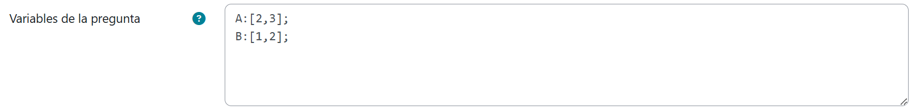
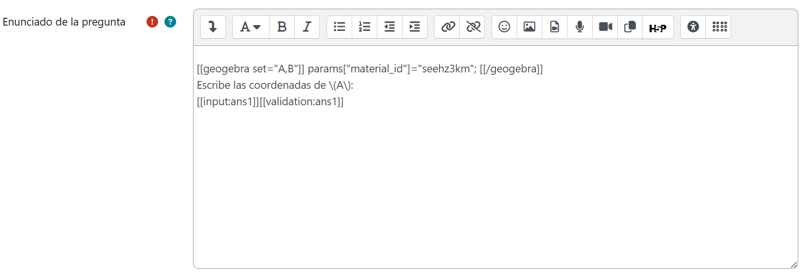
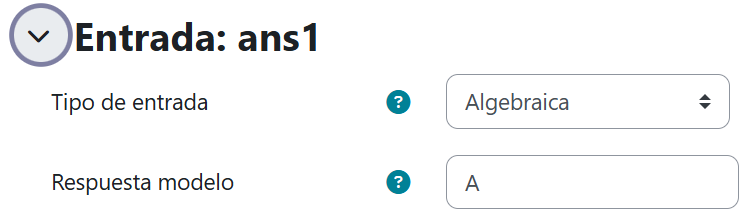
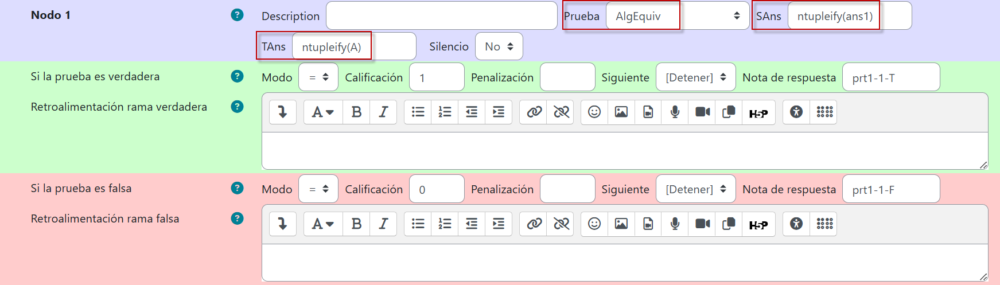
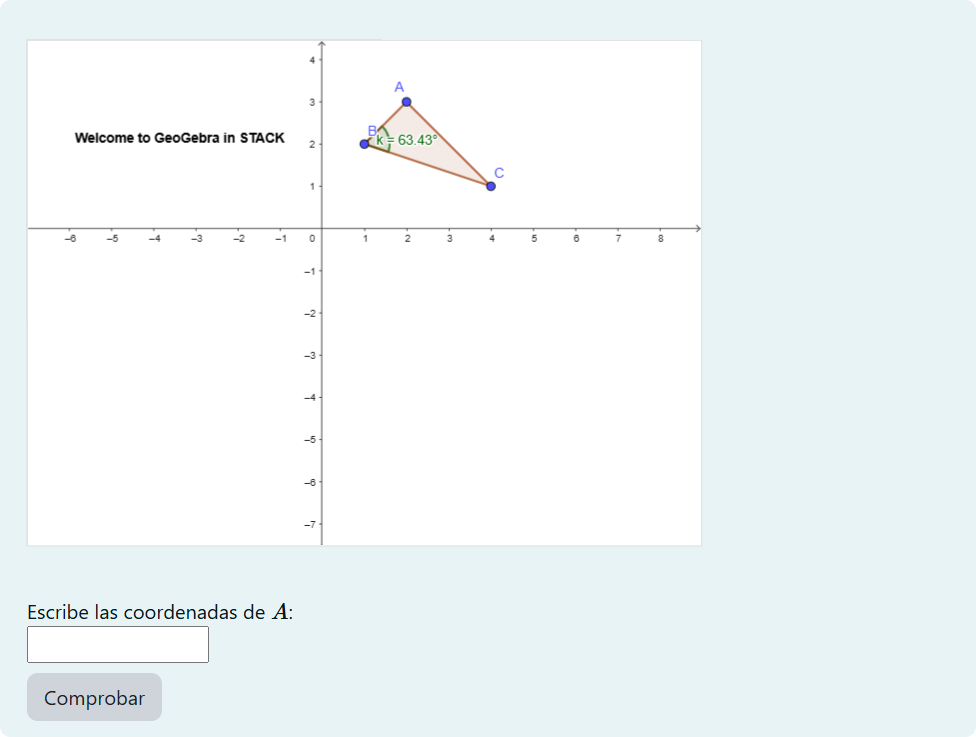

Sincronización de GeoGebra y STACK
STACK puede conectar escenas dinámicas de GeoGebra con las entradas de una pregunta. En las escenas GeoGebra generalmente aparecen objetos que guardan propiedades matemáticas entre sí y cálculos que arrojan algún resultado. Son dichos objetos y resultados los que pueden vincularse a las entradas de STACK.
Para poder utilizar GeoGebra en STACK, la escena dinámica en cuestión debe estar alojada en el sitio oficial de GeoGebra y disponible desde una URL abierta. Por ejemplo, en https://www.geogebra.org/m/seehz3km se tiene una escena dinámica diseñada por el profesor Tim Lutz sobre un triángulo cuyos vértices son puntos libres (pueden moverse) y en función de su ubicación se recalcula de forma dinámica uno de los ángulos. De manera similar, deberemos crear primero una cuenta en https://geogebra.org y subir a nuestro perfil las escenas dinámicas que nos interesen vincular con STACK.
Ahora bien, las escenas dinámicas de GeoGebra pueden insertarse en una pregunta de STACK a través de bloques en los que debe indicarse el correspondiente id. Para nuestro ejemplo, el bloque que habrá de definirse en el enunciado de la pregunta es el siguiente:
[[geogebra]] params["material_id"]="seehz3km";[[/geogebra]]
Por supuesto, nos interesa no solo poder visualizar la escena GeoGebra en el reactivo STACK (lo cual se habrá conseguido hasta ahora), sino además conectar la entrada de la pregunta con la escena dinámica. A continuación exploraremos algunas posibilidades.
Etiqueta set
Se trata de una etiqueta que establecerá un objeto, punto o valor de GeoGebra en un valor calculado por STACK cuando se carga por primera vez. Por ejemplo, supongamos - retomando la escena de Tim Lutz - que deseamos que el estudiante indique la posición del punto A. Para ello primero, crearemos una nueva pregunta STACK y desde Variable de la pregunta capturaremos lo siguiente:

Ahora, en el Enunciado de la pregunta, insertaremos la escena y agregaremos el texto con las instrucciones:

Notemos que en el bloque GeoGebra, hemos empleado la etiqueta set no solo para establecer el valor de A, sino también el de B. ¡Si revisamos la escena en la URL expuesta, los valores originales tanto de A como de B eran otros, pero los hemos cambiado desde STACK!
Hecho esto, desde Entrada, hay que indicar que se trata de de un reactivo Algebraico e indicar a A como la respuesta modelo:

Finalmente, en el Nodo 1, deberá comprobarse la equivalencia algebraica entre la respuesta modelo del profesor y la entrada ingresada por el estudiante. En este caso, se ha empleado el comando ntupleify(), de STACK, para permitir que el estudiante ingrese la respuesta empleando paréntesis en lugar de corchetes bajo la notación habitual de los pares ordenados y, en consecuencia, se ha hecho este mismo ajuste a la respuesta modelo para que este no sea motivo de diferencia.

Guardados los cambios, la pregunta se previsualizará del siguiente modo:

Ahora, ¿qué modificaciones podrías hacer al reactivo para que, de manera aleatoria, la ubicación del punto a ingresar alterne uniformemente entre A y B de manera que los alumnos tengan ejercicios diferenciados? ¡Inténtalo!